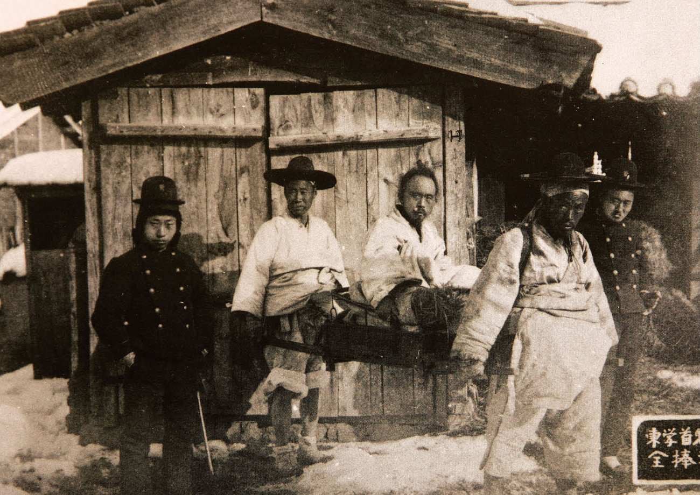
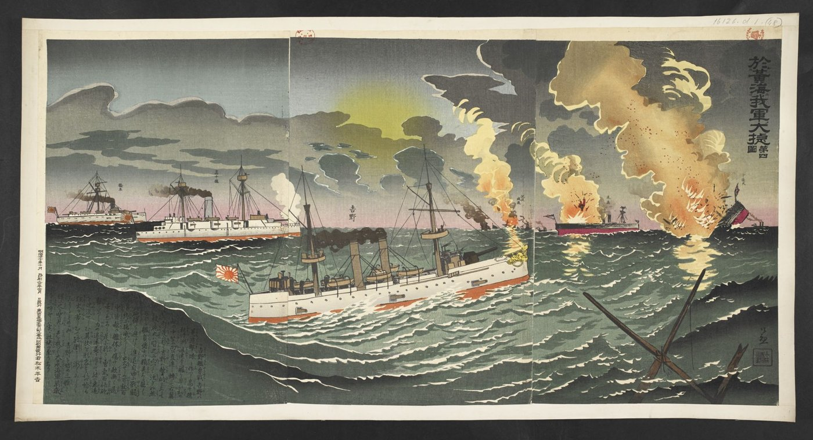
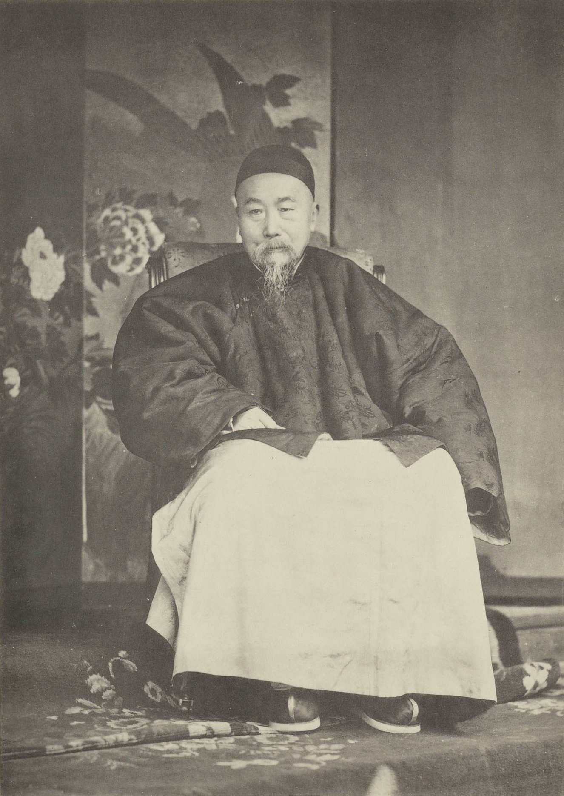
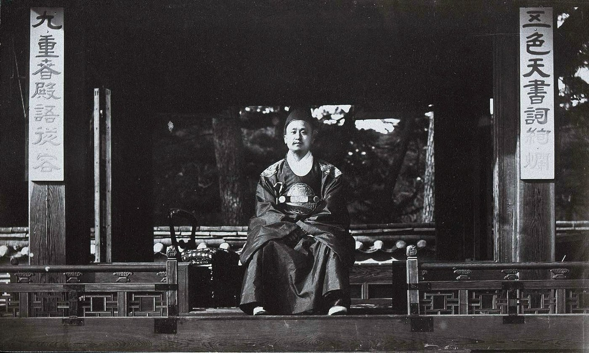
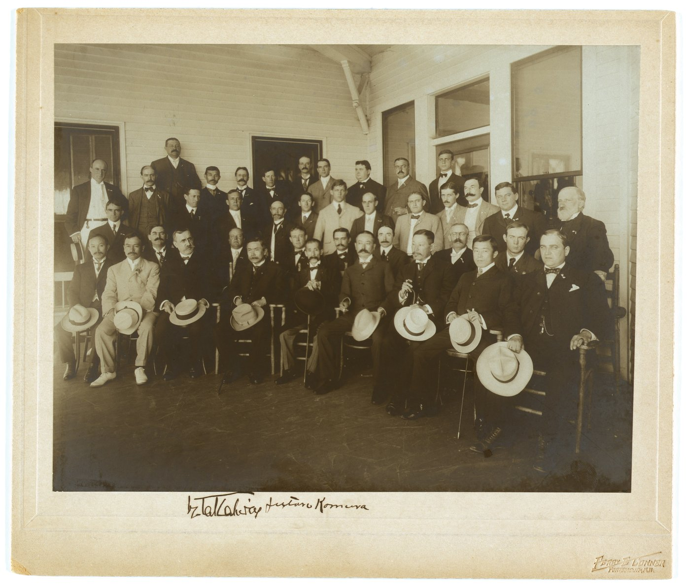
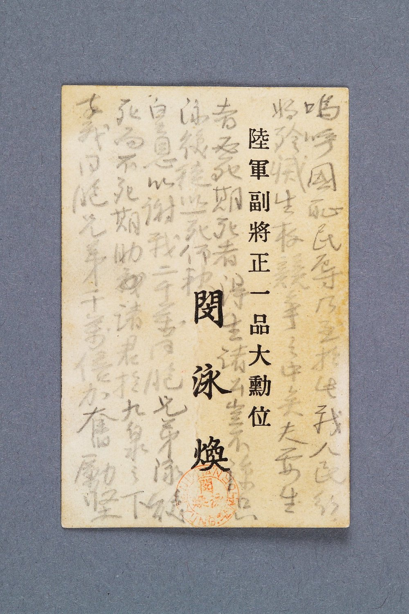

[동북아이야기③] 개항 이후 30년, 세 나라가 갈린 길
조선 법정에 앉은 일본 영사
죽창으로 대포 앞에 선 농민군
130여년 뒤에도 끝나지 않은 호명
AI경제저널=김갑봉 기자 | 1895년 4월 23일, 두 곳에서 두 가지 일이 있었다. 도쿄에서는 러시아·독일·프랑스 세 나라가 일본에 랴오둥(遼東)반도를 청에 돌려주라고 권고했다. 같은 날 한성 법무아문은 전봉준에게 사형을 선고했다. 엿새 전 시모노세키에서 맺은 조약의 제1조는 청이 조선의 완전한 독립자주국 지위를 확인한다는 문장이었다. 그런데 전봉준의 판결문 끝에는 일본 영사의 이름이 적혀 있었다.
1842년 난징(南京), 1854년 가나가와, 1876년 강화도. 청과 일본과 조선은 이 차례로 문을 열었다(이 연재 2편). 조선이 문을 연 지 30년이 되기 전에 세 나라의 자리가 바뀌었다. 청은 조공국을 잃고 배상금을 물었다. 일본은 두 전쟁을 이겨 제국이 됐다. 조선은 외교권을 빼앗겼다.
그 30년의 마디마다 사람이 있었다. 조선과 청과 일본 사람만이 아니다. 러시아와 미국 사람도 함께 서 있었다. 그 시대를 산 이들의 선택과 최후를 따라가 본다.
문자를 아는 자, 전봉준
1895년 음력 2월과 3월, 전봉준은 다섯 차례 심문을 받았다(여섯 차례로 보는 연구도 있다). 그 문답을 적은 기록이 「전봉준공초(全琫準供草)」다. 그의 육성을 가장 많이 담은 법정 기록이다.
왜 수천명이 너를 우두머리로 삼았느냐는 물음에 그는 짧게 답했다. "백성들이 비록 수천명이라 하나 대개 어리석은 농민이요, 저는 문자를 조금 아는 연고입니다." 글을 아는 사람이 드물던 마을에서 글을 안다는 것이 앞장설 이유가 됐다.
고부군수 조병갑이 한 일을 그는 조목조목 꼽았다. 백성이 쌓은 보 아래 새 보를 쌓게 하고 물세를 걷었다. 상답 한 마지기에 두 말, 하답에 한 말씩 모두 700여석이었다. 황무지를 일구면 세를 물리지 않겠다고 문서까지 써 주고는 추수 때 거둬 갔다.
부자들에게서 2만여냥을 빼앗았다. 죄목은 불효, 불목, 음행, 잡기였다. 태인 군수를 지낸 아버지의 비각을 세운다며 1000여냥을 걷었다. 보를 쌓을 때는 남의 산에서 수백년 묵은 나무를 베어다 썼다.
백성이 손 놓고 있었던 것도 아니다. 1893년 겨울 40여명이 관아에 호소했다가 잡혀 갇혔다. 다시 60여명이 호소했다가 쫓겨났다. 봉기는 그다음이었다.
그는 함께 일어선 사람이 누구였는지도 숨기지 않았다. "기포 당시에는 억울한 백성과 동학이 합하였으나 동학은 적고 억울한 백성이 많았습니다." 일본 영사가 함께 앉은 심문정에서 나온 답이다.
두 번째 봉기는 까닭이 달랐다. 1894년 7월 23일(음력 6월 21일) 새벽 일본군이 경복궁을 점령했다. 일본 병사나 각국 사람이 경성에 머무는 것을 내쫓으려 했느냐는 물음에 그는 이렇게 갈랐다. "각국인은 다만 통상만 하는데 일본인은 병사를 거느리고 경성에 진을 치고 있으므로 우리나라 영토를 침략하는가 하고 의아해한 것입니다." 상인은 통상, 군대는 침략이라는 셈법이다.
농민군에게는 제대로 된 무기가 없었다. 음력 11월 9일, 양력 12월 5일 공주 우금치에서 농민군이 총공세에 나섰다. 일본군은 스나이더 소총과 무라타 소총을 들었다. 농민군 다수는 죽창을 들었다.
전봉준이 밝힌 숫자가 결과를 말한다. "두 차례 전투 후 1만여명의 군사 중에 수를 세니 남은 자가 불과 3000여명이고, 그 후 또 두 차례 전투 후 수를 세니 불과 500여명이었다." 1만명이 500명으로 줄었다. 스무 명 가운데 열아홉이 대오에서 사라졌다.
진압을 맡은 일본군 후비보병 독립 제19대대 대대장은 미나미 고시로(南小四郞)였다. 1874년 사가의 난, 1876년 하기의 난, 1877년 서남전쟁 진압에 나섰던 군인이다. 박맹수는 이노우에 가오루(井上馨) 공사가 이런 경력의 그를 일부러 지휘관으로 추천했을 가능성을 짚었다.
일본군만 농민군을 친 것도 아니다. 강효숙은 농민군 탄압에 나선 인물로 미나미와 함께 관군 장수 이두황, 군부대신 조희연, 전라감사 이도재를 꼽았다. 조선 정부의 관리와 군대가 외국 군대 곁에서 자기 나라 농민을 쳤다.
1894년 10월 27일 대본영 병참총감 가와카미 소로쿠(川上操六)가 전보를 쳤다. "동학당에 대한 처치는 엄렬함을 요한다. 향후 모조리 살육할 것." 그 명령은 인천에 자리 잡은 남부병참감부를 거쳐 전선으로 내려갔다. 강효숙은 이를 "살광(殺光) 명령"이라고 불렀다.
제19대대에 내린 훈령에는 이런 조항도 있었다. 농민군이 강원·함경도 쪽 러시아 국경으로 달아나면 후환이 적지 않으니 전라도 쪽으로 몰아넣으라는 것이다. 주한공사 이노우에와 남부병참감 이토 스케요시(伊藤祐義)가 협의해 내린 훈령이었다. 조선 농민을 쫓는 문서에 이미 러시아가 들어와 있었다.
박맹수는 여러 연구를 종합해 일본군에게 희생당한 농민군을 최소 3만~5만명으로 추산한다. 청군 희생 2만~3만명, 일본군 희생 수천명의 몇 배에 이른다는 것이 그의 계산이다. 그는 청일전쟁 최대의 피해자가 조선 민중이었다고 썼다.
전봉준은 1894년 음력 12월 2일 순창 피노리에서 옛 부하의 밀고로 붙잡혔다. 서울로 끌려온 그는 일본영사관에 갇혀 일본 영사의 취조를 받았다. 일본 신문들이 그 취조 내용을 자기 나라 독자에게 자세히 전했다.

개국 504년 음력 3월 29일, 양력 4월 23일 판결선고서 제37호가 나왔다. "전라도 태인 산외면 동곡 거주 농업 평민 피고 전봉준 41세." 적용 법조는 『대전회통』 형전의 한 조항이었다. 군복을 입고 말을 타고 관아에서 변란을 일으킨 자는 때를 기다리지 않고 목을 벤다는 조문이다.
법무아문 대신 서광범과 협판 이재정, 참의 장박, 주사 김기조·오용묵이 이름을 올렸다. 그 옆 회심(會審)란에 한 이름이 더 있다. 경성주재 일본제국 영사 우치다 사다쓰치(內田定槌)다.
일본은 일본인이 걸린 사건에 영사가 함께 재판한다는 회심을 내세웠다. 왕현종은 조선인끼리의 사건인 전봉준 재판에 일본 영사가 앉은 것을 "명백히 불법적이고 내정간섭"이라고 평가했다. 조선의 독립을 확인한다던 조약의 나라가 조선의 법정에 앉아 있었다.
다음 날 음력 3월 30일 새벽 2시, 양력 4월 24일 전봉준은 교수형을 받았다. 판결이 적용한 조문은 참형이었지만 형은 교수형으로 집행됐다. 손화중·김덕명·최경선·성두한이 함께 죽었다.
공식 전사가 지운 왕궁 점령
그때 일본 외교를 이끈 사람은 외무대신 무쓰 무네미쓰(陸奥宗光)였다. 기슈번 다테 무네히로(伊達宗広)의 여섯째 아들로, 고베 해군조련소에서 가쓰 가이슈(勝海舟)에게 배우고 사카모토 료마(坂本龍馬)의 가이엔타이에 들었다(이 연재 2편). 유신 뒤 정부 전복 모의에 가담해 금고 5년형을 받았다. 특사로 풀려난 뒤 유럽을 돌고 와 외무성에 들어갔다. 그는 청일전쟁의 외교를 뒷날 『건건록(蹇蹇録)』에 남겼다. 책은 1896년 외무성이 비밀리에 찍었고, 1929년에야 공개 간행됐다.
1894년 5월 31일 농민군이 전주성을 차지했다. 조선 정부는 6월 3일 청에 군대를 청했다. 일본은 그보다 하루 앞선 6월 2일 이미 파병을 정했고, 6월 7일 청과 일본은 톈진조약에 따라 서로 출병을 알렸다. 6월 11일 농민군은 정부와 전주화약을 맺고 전주에서 물러났다.
그런데 6월 12일부터 일본 혼성여단 약 8000명이 인천에 상륙했다. 일본 정부는 청과 함께 조선 내정을 개혁하자고 제안하되, 협의가 끝날 때까지 군대를 빼지 않는다는 조건을 붙였다. 청은 6월 22일 이를 거부했다. 일본은 다음 날 청에 첫 절교서를 보냈다.
7월 영국의 중재가 실패했다. 7월 23일 새벽 일본군이 경복궁 문을 깨고 들어갔다. 수 시간 교전 끝에 궁을 점령했다.
일본 육군참모본부가 펴낸 공식 전사는 이 일을 우발적 충돌로 적었다. 그 서술이 뒤집힌 것은 100년 뒤였다. 1994년 봄 나카쓰카 아키라(中塚明)가 후쿠시마현립도서관 사토문고에서 참모본부의 「일청전사」 초안을 찾아냈다. 초안에는 면밀한 계획에 따라 왕궁을 점령했다고 적혀 있었다.
박맹수가 이 연구를 『1894년, 경복궁을 점령하라!』로 옮겼다. 청과 싸울 명분이 없었기에 조선 국왕을 손에 넣어야 했다는 것이 연구의 결론이다. 이틀 뒤 7월 25일 풍도 앞바다에서 일본 함대가 청 함대를 쳤다. 7월 29일 성환에서 육전이 벌어졌다. 선전포고는 8월 1일에야 나왔다.
배 한 척 더하지 못한 함대, 이홍장
청의 북양함대는 1888년 정식으로 출범했다. 독일에 발주한 7000t급 철갑함 정원(定遠)과 진원(鎭遠)이 주력이었다. 그 함대를 만든 사람이 직례총독 겸 북양대신 이홍장(李鴻章)이다. 서양 기술을 들여와 나라를 강하게 하자며 1861년 시작한 양무운동의 결실이었다. 이홍장은 1880년대 위안스카이(袁世凱)를 한성에 보내 조선의 내정과 외교에 간섭하던 사람이기도 했다.
널리 퍼진 이야기가 있다. 서태후(西太后)가 해군 예산을 빼내 이화원(頤和園)을 지어 함대가 무너졌다는 것이다. 근대 해군사 연구자 장밍(姜鳴)의 추산은 달랐다. 이화원에 흘러간 해군 경비는 750만냥 안쪽이라는 것이다.
다만 돈이 새 나간 것은 사실이다. 1891년 호부상서 옹동화(翁同龢)가 남북양의 외국 총포와 함선 구매를 2년 동안 멈추자고 상주했다. 1894년 이홍장은 해군을 검열한 뒤 상주했다. 1888년 북양해군을 연 이래 지금까지 배 한 척을 더하지 못했다는 내용이었다. 개전 몇 달 전이었다.
1894년 9월 17일 압록강 어귀 황해에서 두 함대가 맞붙었다. 청은 치원(致遠)·경원(經遠)·초용(超勇)·양위(揚威)·광갑(廣甲) 다섯 척을 잃었다. 일본은 한 척도 잃지 않았다. 치원 함장 등세창(鄧世昌)은 일본 함을 들이받으려 돌진하다 배와 함께 가라앉았다.
이듬해 2월 웨이하이웨이(威海衛)가 무너졌다. 제독 정여창(丁汝昌)은 일본군의 항복 권유에 끝내 응하지 않았다. 1895년 2월 11일 밤 그는 독약을 삼켰고 이튿날 아침 숨졌다. 그가 숨진 뒤 북양함대는 일본군에 항복했다.

1895년 3월 19일 이홍장이 시모노세키에 내렸다. 3월 24일 세 번째 회담을 마치고 숙소로 돌아가던 그를 일본 청년 고야마 도요타로(小山豊太郎)가 쐈다. 이홍장은 얼굴에 총을 맞았다. 총격에 놀란 일본 정부는 국내 강경론을 누르고 엿새 뒤 3월 30일 정전에 응했다. 다만 타이완(臺灣)과 펑후(澎湖)는 정전에서 뺐다.

4월 15일 마지막 회담에서 이홍장은 배상금을 깎아 달라고 거듭 매달렸다. 끝내는 늙은이의 귀국 여비라도 덜어 달라고 했다. 일본은 움직이지 않았다.
4월 17일 조약이 조인됐다. 제1조는 조선의 독립 확인이었다. 제2조로 펑톈성(奉天省) 남부와 타이완, 펑후가 넘어갔다. 제4조로 청은 고평은(庫平銀) 2억냥을 물게 됐다.
엿새 뒤 삼국간섭이 왔다. 4월 24일 히로시마 어전회의는 열국회의를 여는 안을 따졌다. 5월 4일 일본 각의는 랴오둥 반환을 결정했고 다음 날 세 나라에 알렸다. 랴오둥은 돌아갔고, 청은 그 값으로 3000만냥을 더 물었다.
103일의 변법, 강유위와 담사동
조약 소식이 베이징(北京)에 닿자 거인(擧人, 향시 합격자) 강유위(康有爲)가 움직였다. 그는 자신의 연보에 1200여명의 거인을 모아 상서를 올리려 했으나 도찰원이 받지 않았다고 적었다. 공거상서(公車上書)다.
역사학자 마오하이젠(茅海建)이 청 군기처 문서를 날짜별로 훑었다. 음력 2월 27일부터 4월 21일까지 조약에 반대하는 상주가 154차례 올라왔고, 참여자는 연인원 2464명을 넘었다. 도찰원은 강유위가 거절당했다고 적은 그날에도 관원과 거인의 상서 15건을 올려보냈다.
마오하이젠의 결론은 이렇다. "강유위는 아예 제출하러 가지 않았다." 분노는 많은 사람의 것이었다. 뒷날의 주역이 쓴 회고는 사료이자 사료 비판의 대상이다.
그래도 3년 뒤 광서제(光緖帝)는 그를 불렀다. 1898년 6월 11일 「명정국시조(明定國是詔)」로 변법(變法, 제도 개혁)이 시작됐다. 관제와 과거를 뜯어고치고 학교를 세우는 조칙이 쏟아졌다.
9월 20일 광서제는 한 일본인을 만났다. 6월 말 내각을 내놓고 8월 인천으로 들어와 대한제국을 거쳐 9월 청에 온 이토 히로부미(伊藤博文)였다. 시모노세키에서 이홍장 맞은편에 앉았던 사람이 3년 뒤 청 황제를 마주했다. 다음 날 서태후가 정변을 일으켜 광서제를 가뒀다. 변법이 시작된 지 103일째였다.
9월 28일 여섯 사람이 베이징 채시구(菜市口) 형장에서 목이 잘렸다. 강유위의 동생 강광인(康廣仁)과 양심수(楊深秀), 양예(楊銳), 임욱(林旭), 담사동(譚嗣同), 유광제(劉光第)였다. 무술육군자다. 담사동은 서른셋이었다.
도망치라는 권유를 담사동은 물리쳤다. 양계초(梁啓超)가 「담사동전」에 그의 말을 적었다. "각국의 변법은 피를 흘리지 않고 이루어진 적이 없다. 지금 중국에서는 변법으로 피를 흘렸다는 이를 듣지 못했으니, 이것이 나라가 번창하지 못하는 까닭이다. 피 흘릴 이가 있다면 사동부터 시작하게 하라." 일본 연구자 하자마 나오키(狹間直樹)는 이 전기가 만들어진 과정을 추적해, 강유위 쪽이 퍼뜨린 담사동 명의 '절명서'가 위작이라고 논증했다.
강유위는 영국인의 보호를 받아 홍콩으로 빠져나갔다. 양계초는 일본공사관에 몸을 숨겼다가 변발을 자르고 양복을 입고 베이징을 떠나 일본으로 건너갔다. 도쿄에 닿은 지 열흘쯤 지난 11월 1일, 그의 시 「거국행(去國行)」이 일본 신문에 실렸다. "불행하면 승려 겟쇼(月照)가 되고, 다행하면 난슈옹(南洲翁)이 되리." 겟쇼는 바다에 몸을 던져 죽은 승려이고, 난슈옹은 그때 살아남은 사이고 다카모리(西郷隆盛)다. 죽은 담사동과 살아남은 자신을 견준 구절이다.
왕비가 죽은 밤, 고종과 사바틴
조선의 왕궁에도 외국인이 서 있었다. 우크라이나 폴타바에서 태어난 러시아인 아파나시 세레딘-사바틴(Afanasy Seredin-Sabatin)이다. 1860년생인 그는 1883년 묄렌도르프를 따라 조선에 와 인천해관에서 일했다. 1888년 한성으로 옮겨 러시아공사관을 설계했다.
1894년 7월 일본군에게 궁을 짓밟힌 고종은 그해 8월 미국과 러시아 공사의 권유로 사바틴을 경복궁에 두었다. 미국인 윌리엄 다이는 시위대 교관이었다. 일본이 함부로 대하지 못할 외국인을 곁에 두려 한 것이다.

1895년 10월 8일 새벽 4시께 사바틴은 다이의 통역이 깨우는 소리에 일어났다. 그날 새벽 일본 수비대와 낭인들이 궁에 들어가 곤녕합에서 왕비를 찾아 살해했다. 사바틴은 그 새벽에 본 것을 증언서로 남기고 현장 약도를 그렸다. 그 문서는 러시아제국 대외정책문서보관소에 남아 있다. 조선 왕비가 죽은 밤을 기록한 문서를 남긴 사람이 인천 바닷가에서 조선 생활을 시작한 러시아인이었다.
일을 꾸민 사람은 그해 9월 1일 서울에 부임한 공사 미우라 고로(三浦梧樓)였다. 국제 비난이 일자 일본은 관련자를 히로시마로 데려가 재판했다. 1896년 1월 20일 예심은 관련자 모두를 증거불충분으로 풀어 줬다.
을미사변 넉 달 뒤인 1896년 2월 11일 새벽, 고종은 세자와 함께 러시아공사관으로 옮겼다. 이범진과 이완용 등이 일을 꾸몄다. 그날 총리대신 김홍집이 살해됐다. 고종은 1897년 2월 20일 경운궁으로 돌아오기까지 1년 9일을 남의 나라 공사관에서 보냈다. 그해 10월 12일 그는 환구단에서 황제에 올랐고, 이튿날 국호를 대한제국이라 선포했다.
그 사이 러시아와 일본은 조선을 두고 자기들끼리 문서를 주고받았다. 1896년 5월 14일 서울에서 각서를 맺었다. 6월 9일 모스크바에서 로바노프-야마가타 의정서를 맺었다. 비밀 조항에는 두 나라가 조선에 군대를 보내고 머물게 하는 일이 담겼다.
만주도 나뉘고 있었다. 이홍장이 니콜라이 2세 대관식에 갔다가 1896년 6월 3일 모스크바에서 러시아와 밀약을 맺었다. 만주를 가로지르는 동청철도 부설권을 넘겼다(이 연재 4편). 그 밀약의 러시아 쪽 상대가 재무대신 세르게이 비테(Sergei Witte)였다. 1898년 4월 25일 니시-로젠 협정에서 러시아는 조선에서 일본의 상공업 우위를 인정했다.
배상금 없는 강화, 고무라와 비테
러일전쟁의 첫 포성은 인천 앞바다에서 울렸다. 1904년 2월 8일 오후 인천 앞바다에서 러시아 포함 코레예츠와 일본 함대가 처음 포화를 주고받았다. 이튿날 9일 제물포 해전에서 순양함 바랴크와 코레예츠는 일본 함대에 맞서다 하나는 스스로 가라앉히고 하나는 스스로 폭파했다. 항구에 있던 미국 포함 빅스버그는 러시아 수병을 받아 주지 않았다.
전쟁은 1905년 여름 두 나라를 모두 지치게 했다. 미국 대통령 시어도어 루스벨트가 중재에 나섰다. 일본이 6월 10일, 러시아가 6월 12일 받아들였다. 니콜라이 2세의 조건은 분명했다. 배상금은 한 푼도 내지 않고 영토는 한 치도 내주지 않겠다는 것이었다.
러시아 전권은 처음 로마 주재 대사 무라비요프에게 갔다. 그가 건강을 핑계로 물러나자 재무대신에서 밀려나 있던 비테에게 돌아갔다. 일본은 외무대신 고무라 주타로(小村壽太郎)를 보냈다.
비테는 스스로 원칙을 세웠다. 강화를 서두르는 기색을 보이지 않는다. 대제국의 대표답게 처신한다. 기자들에게 친절하고 누구에게나 문을 연다. 소탈하게 행동한다. 유대인에게 적대감을 보이지 않는다.
일본은 12개 조항을 내놓았다. 러시아는 사할린 할양, 전비 배상, 중립항에 억류된 함선 인도, 극동 해군력 제한 네 가지를 거부했다. 8월 29일 오전 10시 두 수석대표가 포츠머스 해군조선소에서 비공식으로 마주 앉았다. 10시 55분 정식 회의로 넘어갔다. 일본은 배상금을 거두고 사할린 남쪽 절반을 받는 데서 멈췄다.
그보다 한 달 앞선 1905년 7월 도쿄에서 미국 육군장관 윌리엄 태프트는 가쓰라 다로(桂太郞) 총리와 마주 앉았다. 태프트는 개인 의견이라며, 일본군이 한국에 종주권을 세우는 것은 이 전쟁의 논리적 결과이고 동양의 항구적 평화에 이바지할 것이라고 말했다. 중재자의 나라는 이미 한국을 일본 몫으로 보고 있었다.

9월 5일 조약이 서명됐다. 러시아는 한국에서 일본이 정치·군사·경제상 탁월한 이익을 갖는다고 인정했다. 뤼순(旅順)·다롄(大連) 조차권과 창춘(長春) 이남 철도, 사할린 남부를 넘겼다. 배상금은 없었다.
같은 날 도쿄 히비야공원에서 강화 반대 국민대회가 열렸다. 군중이 경찰서 2곳과 분서 6곳, 파출소와 초소 203곳을 부수거나 불태웠다. 교회 13곳과 전차 15대도 탔다.
정부가 계엄령을 폈다. 17명이 죽었다. 이긴 나라의 수도가 이겼다는 조약 때문에 불탔다. 중재자 루스벨트는 이듬해 노벨평화상을 받았다.
갈린 자리
포츠머스에서 러시아가 물러난 그해 11월 17일 을사늑약이 맺어졌다. 학부대신 이완용과 군부대신 이근택, 내부대신 이지용, 외부대신 박제순, 농상공부대신 권중현이 찬성했다. 조약문에는 박제순과 일본 공사 하야시 곤스케(林權助)가 이름을 적었다.
사흘 뒤 『황성신문』에 장지연의 논설 「시일야방성대곡」이 실렸다. 신문은 이듬해 2월 12일까지 정간됐다. 장지연은 65일을 갇혔다.

11월 30일 민영환이 스스로 목숨을 끊었다. 그가 명함에 남긴 유서는 고려대박물관에 있다. "영환은 죽되 죽지 아니하고, 구천에서도 여러분을 기필코 돕기를 기약하니." 이 명함 유서는 2024년 국가등록문화유산이 됐다.
동학 진압에 군대를 보낸 일본 총리대신, 시모노세키에서 이홍장과 마주 앉은 전권, 변법이 무너지기 하루 전 광서제를 만난 손님, 을사늑약을 밀어붙인 특사는 모두 한 사람이었다. 이토 히로부미다. 1894년 황해도 신천 청계동에서 열여섯 살 안중근은 아버지 안태훈이 꾸린 민병의 선봉에 서서 동학농민군을 쳤다. 그 소년이 15년 뒤 이토를 쏘았다.
세 나라가 갈린 자리는 조약을 서명한 책상이 아니었다. 출병을 결정하고 왕궁을 점령한 일본 정부, 외국 군대를 불러들이고 그 군대와 함께 자기 나라 농민을 친 조선 지배층, 해군에 배 한 척을 더 사 주지 않은 청의 국고가 그 자리였다. 조약은 이미 갈린 결과를 종이에 옮겨 적었다. 공식 전사는 그렇게 갈린 사실마저 지웠다.
그 기록이 지금 다시 읽히고 있다. 동학농민혁명기록물 185건은 2023년 유네스코 세계기록유산에 올랐다. 국가기록원은 2026년 5월에도 「소모사실」 등 동학 기록물을 복원했다.
평가는 아직 끝나지 않았다. 동학농민혁명 명예회복법은 2차 봉기 참여자를 항일무장투쟁에 나선 사람으로 정의한다. 그러나 2026년 11월 현재 전봉준은 독립유공자가 아니다.
2026년 3월 전북 지역 53개 단체가 동학 2차 봉기 참여자를 독립유공자로 서훈하는 입법을 촉구했다. 이들은 국가보훈부가 을미의병(1895)부터를 독립운동으로 보는 기준 때문에 동학농민군이 서훈을 받지 못한다고 비판했다. 을미의병 참여자 150명은 서훈을 받았지만 동학농민군은 한 명도 없다는 것이다. 동학농민군 서훈을 위한 개정안은 2026년 10월 기준 6건이 국회에 발의돼 있다. 일본군에 맞서 우금치를 오른 사람을 무엇이라 부를지, 130여년 뒤 우리가 답할 차례다.
※ 『동북아이야기』는 조선·한국과 중국, 일본, 러시아, 미국이 얽혀 온 동북아 200여 년을 인물과 사건으로 읽는 84편 연재입니다. 매주 일요일 이어지며 단행본 출간을 준비하고 있습니다. 다음 편은 철도가 만든 제국, 시베리아의 꿈을 다룹니다.
참고문헌
- 박맹수(2017), 「전봉준의 평화사상」, 『통일과 평화』 9집 1호, 서울대 통일평화연구원. https://ipus.snu.ac.kr/wp-content/uploads/files/attach/binaries/12873/946/076/ef149f6546302730b9044c4046f1b1f8
- 강효숙(2011), 「동학농민군 탄압 인물과 그 행적: 미나미 고시로, 이두황, 조희연, 이도재를 중심으로」, 『동학학보』 22호. https://m.earticle.net/Article/A296871
- 茅海建(2005), 「「公車上書」考證補」, 『近代史研究』 2005년 3·4기(『戊戌變法史事考二集』 수록본 전재). https://www.aisixiang.com/data/137893.html
- 狹間直樹, 「梁啓超筆下的譚嗣同: 關於『仁學』的刊行與梁撰「譚嗣同傳」」, 蔣海波 옮김, 『文史哲』. https://www.aisixiang.com/data/30223.html
- 나카쓰카 아키라 지음, 박맹수 옮김(2002), 『1894년, 경복궁을 점령하라!』, 푸른역사.
- 谢一峰, 「梦断甲午年: 试论中日海军力量在19世纪后半期的消长及其原因」, 愛思想. https://www.aisixiang.com/data/128316.html
- 국사편찬위원회 우리역사넷, 「전봉준 공초」, 『사료로 본 한국사』. https://contents.history.go.kr/mobile/hm/view.do?levelId=hm_117_0060
- 한국민족문화대백과사전, 「전봉준공초」. https://encykorea.aks.ac.kr/Article/E0049438
- 한국민족문화대백과사전, 「전봉준」. https://encykorea.aks.ac.kr/Article/E0049437
- 한국민족문화대백과사전, 「우금치 전투」. https://encykorea.aks.ac.kr/Article/E0039816
- 국가기록원, 「형사재판원본(1895년)」 해설, 기록물 소식 101호. https://theme.archives.go.kr/next/pages/new_newsletter/2017/html/vol_101/sub02_2.html
- 아시아역사자료센터(JACAR), 「描かれた日清戦争」 개전 해설. https://www.jacar.go.jp/jacarbl-fsjwar-j/about/p002.html
- 아시아역사자료센터(JACAR), 「描かれた日清戦争」 강화 해설. https://www.jacar.go.jp/jacarbl-fsjwar-j/about/p004.html
- 아시아역사자료센터(JACAR), 일본 외무성 전보(1898년 9월 23일, 양계초 탈출). https://www.jacar.archives.go.jp/das/meta/B03050092100
- 야마구치현 문서관, 「日清戦争 — 下関条約（春帆楼写真）」 해설 자료 4-3-2. https://archives.pref.yamaguchi.lg.jp/cms/wp-content/uploads/2025/08/4-3-2-020.pdf
- 일본 외무성, 「삼국간섭」 외교사료 Q&A. https://www.mofa.go.jp/mofaj/annai/honsho/shiryo/qa/meiji_04.html
- 일본 국립국회도서관, 「日清戦争」, 『史料にみる日本の近代』(『건건록』 간행). https://www.ndl.go.jp/modern/cha2/description23.html
- 일본 국립국회도서관, 「隈板内閣の成立へ」, 『史料にみる日本の近代』. https://www.ndl.go.jp/modern/cha2/description18.html
- "Treaty of Shimonoseki", Encyclopaedia Britannica. https://www.britannica.com/event/Treaty-of-Shimonoseki
- "Treaty of Shimonoseki, 1895"(조약 영문), 미국 서던캘리포니아대 미중연구소. https://china.usc.edu/node/2129
- Philo N. McGiffin, "The Battle of the Yalu", The Century Magazine(1895년 8월), 미 해군연구소 게재본. https://www.usni.org/sites/default/files/inline-files/Pages%20from%20The_Century_Illustrated_Monthly_Magazine.pdf
- "Hundred Days of Reform", Encyclopaedia Britannica. https://www.britannica.com/event/Hundred-Days-of-Reform
- "Self-Strengthening Movement", Encyclopaedia Britannica. https://www.britannica.com/event/Self-Strengthening-Movement
- "Ding Ruchang", Encyclopaedia Britannica. https://www.britannica.com/biography/Ding-Ruchang
- 국사편찬위원회, 『신편 한국사』 39권, 청의 조선 정책. https://contents.history.go.kr/mobile/nh/view.do?levelId=nh_039_0020_0010_0020
- 한국민족문화대백과사전, 「안중근」. https://encykorea.aks.ac.kr/Article/E0035026
- 한국민족문화대백과사전, 「청일전쟁」. https://encykorea.aks.ac.kr/Article/E0056610
- 아시아역사자료센터(JACAR), "Introduction", The Sino-Japanese War of 1894-1895. https://www.jacar.go.jp/english/jacarbl-fsjwar-e/smart/about/p002.html
- 미국 국무부 역사편찬실, FRUS 1904 문서 792(제물포 해전과 빅스버그). https://history.state.gov/historicaldocuments/frus1904/d792
- "The Taft-Katsura Agreement"(1905.7.29 각서), 「세계와 일본」 데이터베이스. https://worldjpn.net/documents/texts/pw/19050729.O1E.html
- 국사편찬위원회, 『신편 한국사』 41권, 을미사변. https://contents.history.go.kr/front/nh/view.do?levelId=nh_041_0020_0010_0020
- 한국민족문화대백과사전, 「을미사변」. https://encykorea.aks.ac.kr/Contents/Item/E0042948
- 한국민족문화대백과사전, 「아관파천」. https://encykorea.aks.ac.kr/Article/E0034214
- 한국민족문화대백과사전, 「대한제국」. https://encykorea.aks.ac.kr/Contents/Index?contents_id=E0015187
- 한국민족문화대백과사전, 「웨베르-고무라 각서」. https://encykorea.aks.ac.kr/Article/E0066660
- 국사편찬위원회 우리역사넷, 「로바노프-야마가타 의정서」, 『한국사연대기』. https://contents.history.go.kr/mobile/tg/view.do?subjectCode=tg_ty_040&tabId=02&levelId=tg_004_0320
- 아시아역사자료센터(JACAR), 「露清密約」(1896.6.3). https://www.jacar.go.jp/english/nichiro/18960603.htm
- 미국 국무부 역사편찬실, FRUS 1898 문서 391(니시-로젠 협정). https://history.state.gov/historicaldocuments/frus1898/d391
- Japan-America Society of New Hampshire, Portsmouth Peace Treaty, 「Ready for Peace」·「Negotiations」·「Peace」. https://www.portsmouthpeacetreaty.org/ready-for-peace.html , https://www.portsmouthpeacetreaty.org/negotiations.html , https://www.portsmouthpeacetreaty.org/peace.html
- Sergei Witte, The Memoirs of Count Witte(1921), 인터넷아카이브. https://archive.org/download/memoirsofcountwi00wittuoft/memoirsofcountwi00wittuoft_djvu.txt
- "The Nobel Peace Prize 1906 — Theodore Roosevelt", NobelPrize.org. https://www.nobelprize.org/prizes/peace/1906/roosevelt/facts/
- 한국민족문화대백과사전, 「을사늑약」. https://encykorea.aks.ac.kr/Article/E0042958
- 한국민족문화대백과사전, 「장지연」. https://encykorea.aks.ac.kr/Article/E0048803
- 한국학중앙연구원 디지털인문학, 「민영환 유서」. https://dh.aks.ac.kr/wiki/index.php/%EB%AF%BC%EC%98%81%ED%99%98_%EC%9C%A0%EC%84%9C
- 국가유산청, 「을사늑약 반대 의지 담긴 「민영환 유서(명함)」 국가등록문화유산 등록」, 2024.6.13. https://www.khs.go.kr/newsBbz/selectNewsBbzView.do?newsItemId=155704840
- 안중근, 「안응칠 역사」, 위키문헌. https://ko.wikisource.org/wiki/안응칠_역사
- 김구, 『백범일지』, 위키문헌. https://ko.wikisource.org/wiki/백범일지
- "The Battle of the Yalu, 17 September 1894", The Sino-Japanese War of 1894–1895(sinojapanesewar.com). https://sinojapanesewar.com/yalu.htm
- 姜鳴(문답), 「甲午戰前的中日關係」, 愛思想. https://www.aisixiang.com/data/74137.html
- 马勇, 「李鸿章、伊藤博文与甲午战争: 两个人的战争」, 愛思想. https://www.aisixiang.com/data/99249.html
- 信長正義, 「南小四郎の日本軍後備歩兵第19大隊と東学農民軍殲滅」(박맹수 연구 인용), 『むくげ通信』 274호. https://ksyc.jp/mukuge/274/nobunaga.pdf
- 코토뱅크, 「陸奥宗光」. https://kotobank.jp/word/陸奥宗光-142301
- 코토뱅크, 「日比谷焼打事件」(일본대백과전서). https://kotobank.jp/word/%E6%97%A5%E6%AF%94%E8%B0%B7%E7%84%BC%E6%89%93%E4%BA%8B%E4%BB%B6-367834
- 이윤영, 「2차 동학농민혁명, 우치다 사다츠지 일본영사가 주도한 전봉준 판결문」, 오마이뉴스, 2024.12.26. https://www.ohmynews.com/NWS_Web/View/at_pg.aspx?CNTN_CD=A0003091718
- 이윤영, 「2차 동학농민혁명, 동학의병군 진압 일본군 부대 편성」, 오마이뉴스, 2024.12.22. https://www.ohmynews.com/NWS_Web/View/at_pg.aspx?CNTN_CD=A0003090699
- 왕현종 기고, 「[세계기록유산이 된 '동학농민혁명기록물'] (17) '전봉준 공초', 2차 농민 봉기 목적은 어떻게 다루어졌나?」, 전북일보, 2024.9.19. https://www.jjan.kr/articleAmp/20240912580205
- 「"전봉준은 왜 독립유공자가 아닌가"… 전북 53개 단체 '동학 서훈' 입법 촉구」, 경향신문, 2026.3.4. https://www.khan.co.kr/article/202603042201001/
- 「국가기록원, 132년 전 민중의 열망 담긴 동학농민혁명 기록물 되살려」, 뉴스서울, 2026.5.7. https://newsseoul.co.kr/news/view/1065603623882389
- 「慷慨赴死: 戊戌六君子与戊戌变法」, 人民网(신화사 전재), 2018.11.9. https://cpc.people.com.cn/n1/2018/1109/c421684-30391598.html
- 「沉默的甲午」, 凤凰网, 2014.7.26. https://news.ifeng.com/c/7fn353KGSTB
- 「동학단체 대표들, 이원택 전북지사에 "동학농민혁명 참여자 서훈 법안 조속 처리 나서야"」, 투데이안, 2026.10.22. https://www.todayan.com/news/articleView.html?idxno=634469
- 「[씨줄날줄] 동학혁명 유족수당」, 서울신문, 2026.8.27. https://m.go.seoul.co.kr/news/editOpinion/weft-column/2026/08/27/20260827027005
- 「亲历戊戌变法的伊藤博文: 坐在光绪身旁，替张荫桓求情」, 澎湃新闻, 2021.5.11. https://www.thepaper.cn/newsDetail_forward_12458034
- "The Russian who witnessed Empress Myeongseong's assassination", 코리아타임스, 2020.10.25. https://www.koreatimes.co.kr/lifestyle/arts-theater/20201025/the-russian-who-witnessed-empress-myeongseongs-assassination
- 「「명성황후 시해 보고서」 러서 발견」, 서울신문, 1995.6.19. https://www.seoul.co.kr/news/1995/06/19/19950619007006
[사진 출처]
- [사진1] 村上天眞(무라카미 덴신, 촬영자로 알려짐), "Jeon Bong-jun under arrest (27 February 1895)", 위키미디어 공용, 퍼블릭 도메인. https://commons.wikimedia.org/wiki/File:Jeon_Bong-jun_under_arrest_(27_February_1895).jpg
- [사진2] 小林清親, "The Battle of the Yalu River" 16126.d.1(48), 영국도서관, 위키미디어 공용, 퍼블릭 도메인. https://commons.wikimedia.org/wiki/File:16126.d.1(48)-The_Battle_of_the_Yalu_River._4.jpg
- [사진3] 小川一眞, "Li Hung-chang in Shimonoseki"(1895), 위키미디어 공용, 퍼블릭 도메인. https://commons.wikimedia.org/wiki/File:Li_Hung-chang_in_Shimonoseki.jpg
- [사진4] Percival Lowell, "Emperor Gojong of the Korean Empire by Percival Lowell, 1884", 위키미디어 공용, 퍼블릭 도메인. https://commons.wikimedia.org/wiki/File:Emperor_Gojong_of_the_Korean_Empire_by_Percival_Lowell,_1884.png
- [사진5] Perry E. Conner, "Russian & Japanese delegates and members of the press, Portsmouth, N.H."(1905), 미국 의회도서관 LCCN2005680339, 위키미디어 공용, 퍼블릭 도메인. https://commons.wikimedia.org/wiki/File:Russian_%26_Japanese_delegates_and_members_of_the_press_-_Perry_E._Conner,_Portsmouth,_N.H._LCCN2005680339.jpg
- [사진6] "Testament of Min Young-hwan - obverse", 위키미디어 공용, 공공누리 제1유형. https://commons.wikimedia.org/wiki/File:Testament_of_Min_Young-hwan_-_obverse.jpg